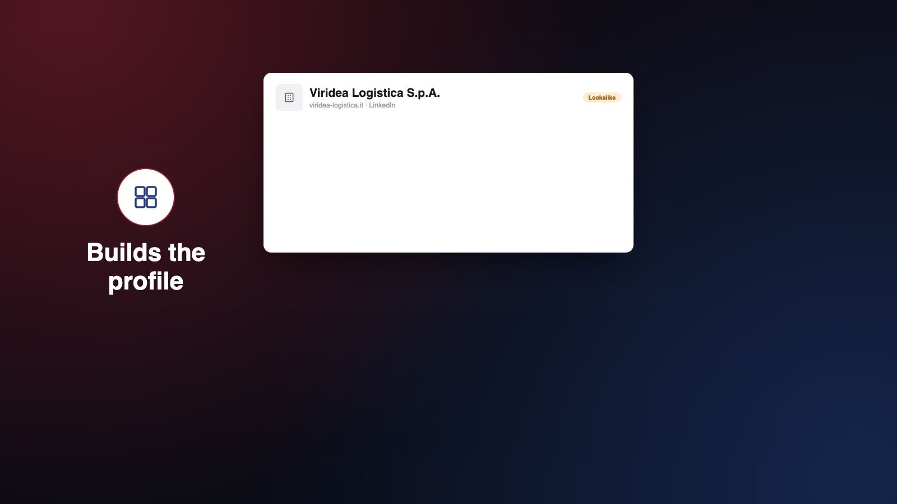
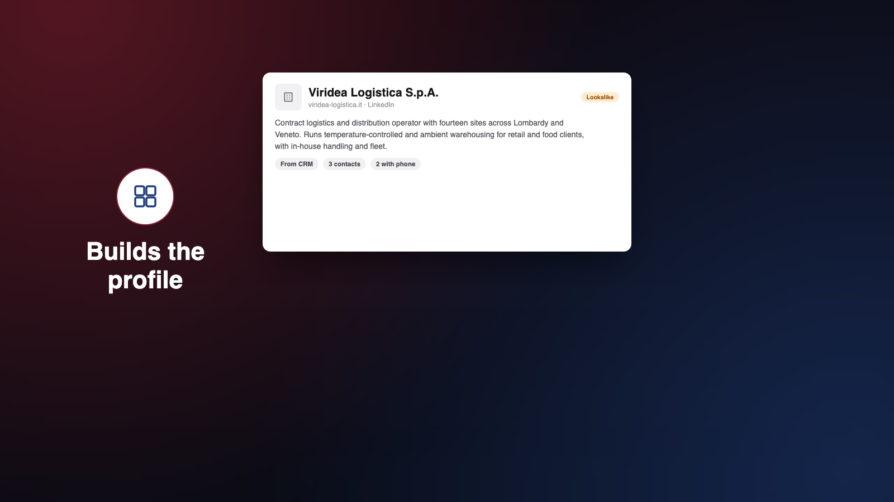
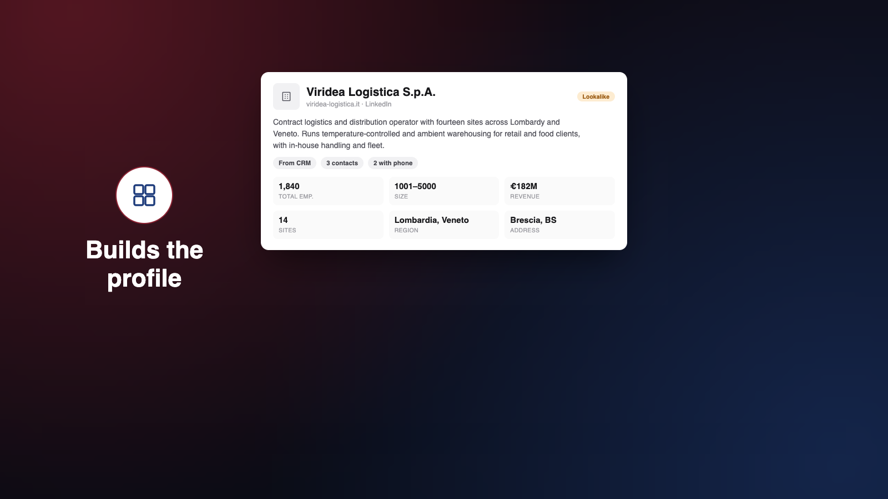
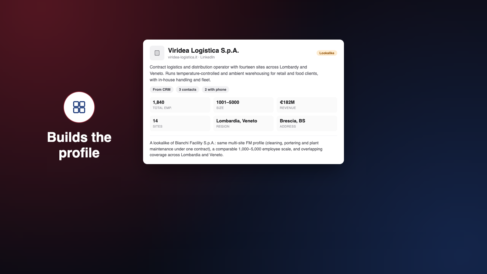

Slack canvas F0C4GJD6B2P. Nine beats, skeleton created 2026-09-26. Each session merges only its own <section data-beat="N"> block via BEGIN/END markers -- see any scene file's header. Click a frame, arrow keys to move, Escape to close. ← old wip page (frozen for reference)
Beat 1 — Hook new
"How do you give every promising account the depth of preparation and follow-through you would give your most important opportunity, without multiplying the work?"
As-built beat, two changes this round: Viridea's row starts bare (no Lookalike chip — the "before" half of the before/after bookend with beat 9); on the pull-back, every row fills faintly with the same four labels (30%, 200ms) before the cut to beat 2.
Leads list, plain. Viridea's row is bare — no Lookalike chip
Zoom to Viridea's row, whole row in frame, ~2×
Label 1 — Research
Label 2 — Decision-makers
Label 3 — Tailored pitch
Label 4 — Follow-up, all four chained
Pull back to 1×; every row fills faintly with the same four labels (30%, 200ms)
Hold — cuts to beat 2 on “work”
Beat 2 — Name (opening lockup) new
"EMK Signal, EMK's proprietary go-to-market automation platform, is built to do just that."
Full clip — typing, divider, tagline, fade
“EMK Signal” types in over the glass-treated product (Ascend's build, frame-matched)
Learning-loop arrow draws back to card 1; symbol pulses; label appears
Full diagram held ~1s after “sharper”, before the fade
Diagram faded — beat 4's product fades in under glass next
Beat 4 — Sourcing new
"It brings together what the business already knows: past customer conversations, accounts that look like the ones it has already won, and leads the team adds along the way. Then it fills in the picture from third-party databases and the web."
Card 2 lands — “Like your best customers” (Viridea, lookalike tag)
Card 3 lands — “Added from an event” (trade fair tag)
Beat 4b — Builds the profile new
"It brings together what the business already knows: past customer conversations, accounts that look like the ones it has already won, and leads the team adds along the way. Then it fills in the picture from third-party databases and the web."
Full clip

Cards 1 and 3 fade; the lookalike card grows into the hero, left icon + “Builds the profile” fade in — no cut

Enrichment: description + chips pop in

Enrichment: stat grid pops in

Match-reason row appears beneath the stats — hold
Beat 5 — Prioritisation new
"Every account is scored, so the team always knows where to start. And when a buying signal appears, like a new site opening, the score moves and the account moves with it."
Full clip — list settles, trigger, score tick, row rises
Leads list settles, top six rows sorted by score. Viridea row 4 (78.0)
Buying-trigger note appears on Viridea's row
Score ticks 78.0 → 92.0, green ↑14
Row rises to the top — hold
Beat 6 — The right person not started
"For ServiceKey, that could mean an email in Italian to a facilities director, connecting the prospect's expansion with ServiceKey's experience supporting similar sites."
No frames yet.
Beat 7 — The pitch, sent, followed up not started
"The salesperson reviews, edits and sends. Follow-ups are queued with the account history, and feedback helps improve future drafts."
No frames yet.
Beat 8 — Command Centre, for management not started
"For the management- the Sales Command Centre shows activity by salesperson, which messages generate responses, and where follow-ups are overdue or accounts have stalled, allowing speedier intervention."
No frames yet.
Beat 9 — Close (closing lockup) new
"EMK Signal puts the company's collective knowledge behind every salesperson, and gives them more time for what matters most: being in front of customers."
Full clip — wipe, wordmark, divider, tagline
Account view holds, slow 1.05× push-in begins (illustrative placeholder here -- the real account view is beat 6/7/8's live product)